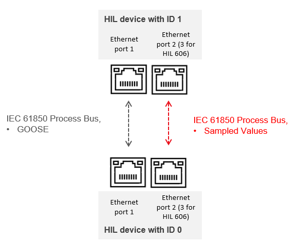
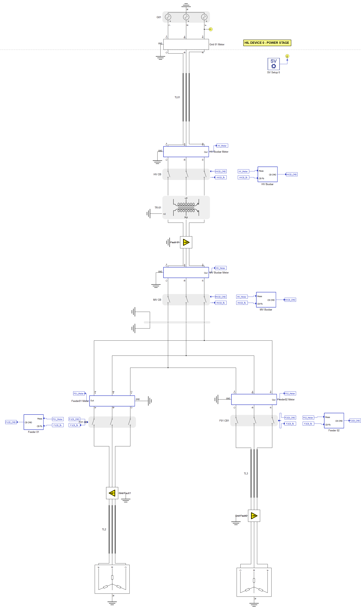
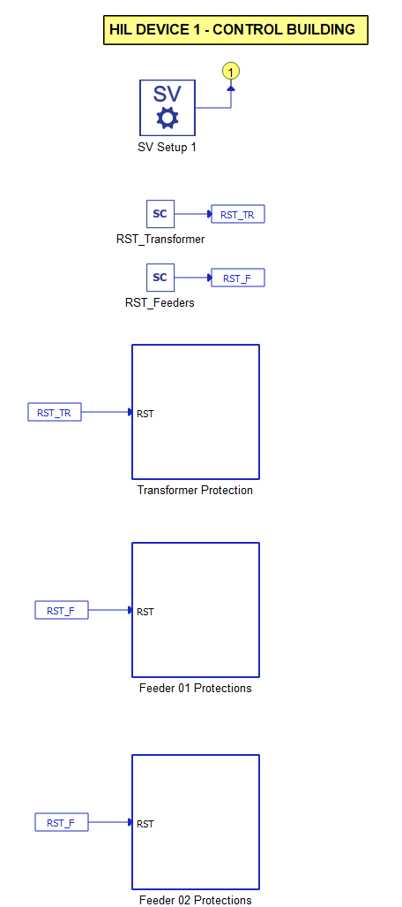
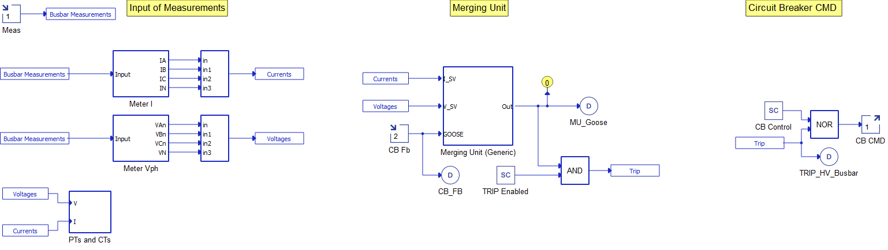
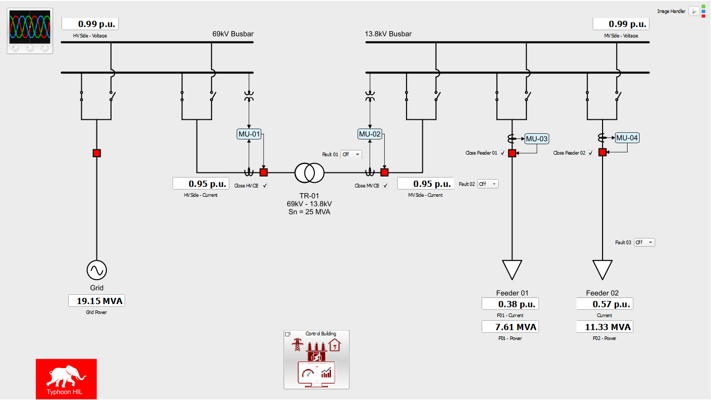
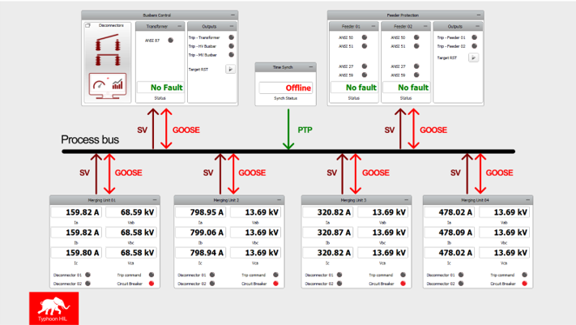
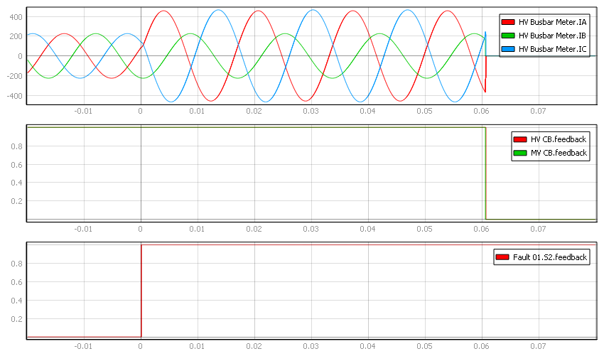
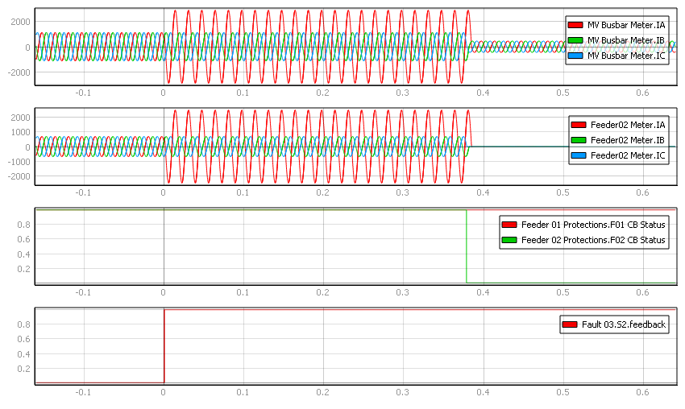

Digital substation with IEC 61850 process bus
Simulation of multi-HIL capabilities using the IEC 61850 communication protocol
Introduction
Digital Substations are a category of electrical substations with a process bus that allows for data exchange via copper or fiber optic wires using Ethernet networks [1]. Devices communicate through communication protocols as outlined in the IEC 61850 standard, which defines some key requirements such as:
- high availability
- ensuring interoperability among different vendors,
- the need to introduce an additional device in the substation, called a merging unit (MU), which handles communication with conventional equipment
The increased need for cybersecurity in the network [2][3]. These devices are merging units (MUs). The advantages of using the IEC 61850 standard are the long-term cost reduction, lower cabling needs, and the low cost of equipment extension when establishing new power networks [3]. Additionally, there is an increase in operator safety, as the risk of accidental opening of the secondary side of measurement transformers is reduced, and current and voltage measurements are transmitted through communication networks such as fiber optics.
In this application note, an example is presented for digital substations using two HIL devices (ID 0 and ID 1). The Ethernet wiring of the setup is presented in Figure 1:

The HIL device with ID 0 simulates the switchyard which consists of a transmission line, a transformer, switchgear equipment, and CT/VTs. The second HIL device with ID 1 simulates the protection systems in the control building. The HIL devices communicate through the IEC 61850 standard. The measurements are transmitted via Sampled Values (SV). The trip signals, feedback signals, and reset signals are transmitted through Generic Object Oriented Substation Event (GOOSE) messages.
Model description
As shown in Figure 2 and Figure 3, the model schematic is partitioned between two HIL devices. The power stage of the substation is incorporated in the HIL device with ID 0, encompassing the substation’s power system, bays (with merging unit and circuit breaker control), and the SV Setup component.

The control building of the substation is situated in the HIL device with ID 1.

An interface between the simulated conventional components and the IEC 61850 network is achieved through merging units. In this example, a model of a generic merging unit is used. The model of a merging unit consists of an SV Publisher, a GOOSE Publisher, and a GOOSE Subscriber component. The merging units are positioned in the substation yard, in proximity to the measurement equipment and circuit breakers. These components are simulated on the HIL device with ID 0.
Each bay contains one model of a merging unit, in addition to the model of circuit breaker. The model of a substation consists of four bays:
- High voltage (HV) busbar,
- Medium voltage (MV) busbar,
- Two feeders connected to the loads.
The protection relays operate within the control building. In this example, the HIL device with ID 1 is a centralized protection system. The HIL device with ID 1 subscribes to all four SV streams and GOOSE messages with the circuit breakers feedback signal from the MUs. The HIL device with ID 1 publishes GOOSE messages with the trip signals.

Protections have been implemented to each of the two feeders and the power transformer. The feeders are equipped with overcurrent, overvoltage and undervoltage protections, while the transformer features differential protection. Additionally, a backup overcurrent protection has been implemented for the MV busbar.
The configuration of SV protocol is described in Table 1, Table 2, Table 3, and Table 4:
| Description | Value |
|---|---|
| Mac Address | 01:0C:CD:04:00:01 |
| SV ID | MU_TYPHOON_HV |
| APP ID | 0x4001 |
| ConfRev | 1 |
| Vlan ID | 0 |
| Priority | 7 |
| Description | Value |
|---|---|
| Mac Address | 01:0C:CD:04:00:02 |
| SV ID | MU_TYPHOON_MV |
| APP ID | 0x4002 |
| ConfRev | 1 |
| Vlan ID | 0 |
| Priority | 6 |
| Description | Value |
|---|---|
| Mac Address | 01:0C:CD:04:00:03 |
| SV ID | MU_TYPHOON_F01 |
| APP ID | 0x4003 |
| ConfRev | 1 |
| Vlan ID | 0 |
| Priority | 5 |
| Description | Value |
|---|---|
| Mac Address | 01:0C:CD:04:00:04 |
| SV ID | MU_TYPHOON_F02 |
| APP ID | 0x4004 |
| ConfRev | 1 |
| Vlan ID | 0 |
| Priority | 4 |
The GOOSE configuration is shown in Table 5, Table 6, Table 7, and Table 8:
| Index | Description | Detail | Publisher | Subscriber | SEL487 GOOSE Function |
|---|---|---|---|---|---|
| 0 | HV Circuit Beaker | Trip | HV Busbar | MU-01 | PRO.TRIPSPTRC2.Tr.general |
| 1 | HV Circuit Beaker | Feedback | HV Busbar | MU-01 | ANN.VBGGIO1.St.Ind001.stVal |
| Index | Description | Detail | Publisher | Subscriber | SEL487 GOOSE Function |
|---|---|---|---|---|---|
| 0 | MV Circuit Beaker | Trip | MV Busbar | MU-02 | PRO.TRIPSPTRC3.Tr.general |
| 1 | MV Circuit Beaker | Feedback | MV Busbar | MU-02 | ANN.VBGGIO1.St.Ind002.stVal |
| Index | Description | Detail | Publisher | Subscriber | SEL487 GOOSE Function |
|---|---|---|---|---|---|
| 0 | F01 Circuit Beaker | Trip | Feeder 01 | MU-03 | PRO.TRIPWPTRC5.Tr.general |
| 1 | F01 Circuit Beaker | Feedback | Feeder 01 | MU-03 | ANN.VBGGIO1.St.Ind003.stVal |
| Index | Description | Detail | Publisher | Subscriber | SEL487 GOOSE Function |
|---|---|---|---|---|---|
| 0 | F02 Circuit Beaker | Trip | HV Busbar | MU-04 | PRO.TRIPSPTRC2.Tr.general |
| 1 | F02 Circuit Beaker | Feedback | HV Busbar | MU-04 | ANN.VBGGIO1.St.Ind004.stVal |
Simulation
This example uses two HIL Devices to simulate communication over the IEC 61850 standard. It comes with a pre-built SCADA Panel with two levels: the root panel shown in Figure 5, and the control building shown in Figure 6. These panels offers the most essential user interface elements (widgets) to monitor and interact with the simulation at runtime, allowing you to further customize it according to your needs.
The root SCADA panel presents the electrical diagram of the substation yard, featuring widgets for monitoring substation parameters, status of the circuit breakers, and widgets for operating faults in the feeders and in the protection zone of the power transformer.

Meanwhile, the SCADA panel for the control building shows the process bus diagram of the station. At the top, the status of feeder and transformer protections is presented, along with the time synchronization status via PTP. At the bottom, the electrical parameters of each merging unit are shown, in addition to the status of circuit breakers and trip signals received from the protections. The Target RST button is used for resetting the fault statuses of the protective relays.

By selecting the Fault 01: 1ph combo box we can simulate a transformer fault (Figure 7). The simulated fault is phase-to-earth. The first viewport shows the HV busbar measurements, while the second and third shows the statuses of the circuit breaker and fault signals, respectively. In this case, the differential protection operates within 60 ms. Both HV and MV circuit breakers have tripped and isolated the transformer.transformer.

By selecting the Fault 03: 1ph combo box we can simulate a line fault (Figure 8). In this case, the test objectives are to validate over-current line protection and the selectivity of the system. The simulated fault is phase-to-earth. On the first and second viewports, the MV busbar measurements and Feeder measurements are presented, while the third and fourth viewports show the circuit breaker and fault signals statuses. In this case, the over-current line protection operates within a little less than 0.4 seconds. Only Feeder 02 circuit breakers tripped and isolated the feeder, while the rest of the system continued working under nominal conditions.

Test Automation
We don’t have a test automation for this example yet. Let us know if you wish to contribute and we will gladly have you signed on the application note!
Example requirements
Table 9 provides detailed information about the file locations and hardware requirements for running the model in real-time, followed by the HIL device resource utilization when running the model using this minimal hardware configuration. This information is provided to help you with running and customizing the model as you see fit.
| Files | |
|---|---|
| Typhoon HIL files |
examples\models\power systems\digital substation digital substation.tse digital substation.cus digital substation.scd |
| Minimum hardware requirements | |
| No. of HIL devices | 2 |
| HIL device model | HIL404 |
| Device configuration | 3 |
| HIL device resource utilization | |
| No. of processing cores | 2 |
| Max. matrix memory utilization | 73.75% |
| Max. time slot utilization | 45.36% |
| Simulation step, electrical | 1 µs |
| Execution rate, signal processing | 100 µs |
References
[1] ARC Advisory Group, “The Next-Generation Digital Substation”, White Paper, Feb. 2021
[2] M. Adamiak, D. Baigent and R. Mackiewicz, “IEC 61850 Communication Networks and Systems in Substations: An Overview for Users”, The Protection & Control Journal, pp. 61-68, 2009.
[3] R. Mackiewicz, “Overview of the IEC 61850 and Benefits”, 2006 IEEE PES Power Systems Conference and Exposition, Atlanta, GA, USA, pp. 623-630, 2006.
Authors
[1] Jhonatan Antônio Cassol
[2] Simisa Simic